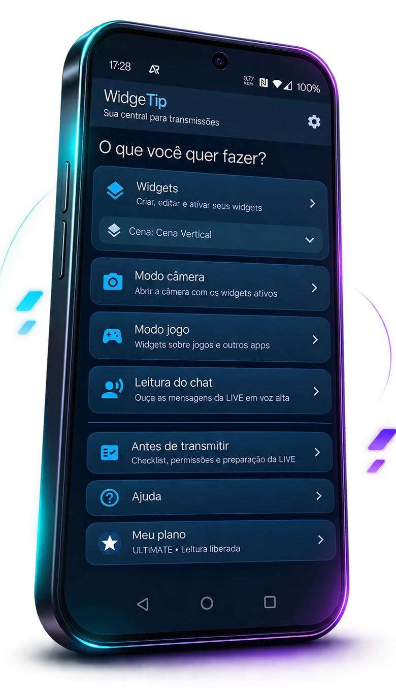

Editor visual de widgets
Ajuste posição e aparência com guias, alinhamento inteligente, histórico Desfazer/Refazer e controle de camadas.
Widgets, cenas personalizáveis e ferramentas de interação em um só lugar. O WidgeTip ajuda você a construir uma experiência mais expressiva nas suas transmissões pelo celular.

Organize elementos na tela, personalize a identidade da sua transmissão e destaque o que importa para a sua comunidade.
Ajuste posição e aparência com guias, alinhamento inteligente, histórico Desfazer/Refazer e controle de camadas.
Organize cenas, grupos e áreas seguras, escolha modelos e alterne composições com transições em retrato ou paisagem.
Explore composições sobre a câmera ou sobre jogos, usando os recursos permitidos pelo Android e pelo aplicativo transmissor.
Leitura opcional de comentários e categorias de eventos disponíveis nas conexões experimentais com TikTok, Twitch e Kick. Recursos sujeitos à disponibilidade de terceiros.
Combine textos, relógios, imagens estáticas, GIFs e WebP animados, além de conteúdo incorporado por widgets web.
Exporte cenas e widgets em arquivos .wpix criptografados e escolha entre restauração completa ou seleção de itens, com prévia antes de confirmar.
* Recursos experimentais e integrações externas podem variar conforme a plataforma, a transmissão e a fase de testes.
A base RC3.6 reúne o painel WidgeTip LIVE, seis opções de aparência e restauração seletiva de backup. A RC3.7 foi promovida como snapshot estável de código após homologação funcional da UX LAB em dois aparelhos. A edição, os banners e a navegação foram refinados; o novo APK build 21 ainda precisa de verificação e instalação.
Recursos incorporados à base estável de código, ainda distribuídos em beta fechado.
Melhorias homologadas na UX LAB e incorporadas ao código estável RC3.7; APK de release ainda pendente.
Disponibilidade: o WidgeTip permanece em beta fechado, sem APK público anunciado. O código RC3.7 foi promovido a snapshot estável; o APK build 21 ainda não foi homologado. O aplicativo não inicia nem transmite lives sozinho.
O WidgeTip complementa sua ferramenta de transmissão. Você mantém o controle de como e onde realiza a LIVE.
Escolha widgets, configure cenas e grupos e personalize a posição de cada elemento.
Revise permissões, organize perfis e use o simulador offline para ensaiar interações.
Inicie a transmissão pelo aplicativo da plataforma e use suas sobreposições conforme a compatibilidade.
De cenas personalizáveis a sobreposições para suas metas, o WidgeTip foi pensado para criadores que querem uma identidade própria — com personalização de widgets, voz e organização de cenas.
O WidgeTip oferece widgets web e recursos complementares para ambientes usados por criadores de conteúdo.
Comentários e eventos selecionados em prévias experimentais, conforme os sinais recebidos e a disponibilidade do serviço.
Comentários e avisos de eventos disponíveis por conexão experimental; a recepção depende das mensagens entregues pela plataforma.
Chat em tempo real experimental e avisos por voz; alguns alertas dependem da configuração opcional de um bot externo.
Incorporação visual de conteúdos compatíveis por meio de endereços de widgets web.
WidgeTip é um projeto independente, sem vínculo, patrocínio ou endosso das plataformas e marcas mencionadas. Seus nomes pertencem aos respectivos titulares.
A RC3.6 é a referência estável de código. A RC3.7 foi promovida como código estável após homologação da UX LAB nos dois aparelhos, com melhorias de interface, banners e remoção da captura rápida própria. O APK build 21 ainda depende de validação. Não há anúncio de APK público nem de preços. A compilação e a aprovação final da RC3.7 ainda são pendentes.
Construído com atenção à experiência de quem cria.
A candidata RC3.7 simplifica o catálogo e a Ajuda, melhora banners e editores e retira a captura rápida própria. O código foi homologado na UX LAB e promovido à RC3.7 estável. A validação do APK específico da release continua pendente.
O simulador disponível no código beta gera comentários e eventos fictícios no aparelho, sem conexão real com TikTok, Twitch ou Kick. Ele serve para ensaiar a leitura por voz e a apresentação dos widgets.
Para reunir configurações locais de cenas, voz, eventos e opções de exibição, facilitando a troca de contexto. Os perfis não iniciam transmissões nem conectam canais automaticamente. Os perfis não fazem parte do backup .wpix v1.
Sim. A RC3.6 incorporou a restauração seletiva de cenas e widgets; você pode optar pela restauração integral ou escolher itens após autenticar o arquivo protegido por senha.
Algumas funções estão sujeitas ao plano utilizado. O aplicativo indica quando há restrições. Planos, preços e condições para lançamento público ainda não foram anunciados.
Ainda não há uma versão pública anunciada para download. O projeto está em fase de desenvolvimento e testes beta controlados.
O requisito mínimo atualmente previsto é Android 10 (API 29). Requisitos e compatibilidade podem ser revisados antes do lançamento.
Não. O WidgeTip é uma ferramenta de personalização e apoio à transmissão. Você continua usando o aplicativo ou serviço de sua plataforma para entrar ao vivo.
Não. Os recursos de leitura de chat dessas plataformas são experimentais e não constituem integração oficial. Podem apresentar limitações, instabilidade ou interrupções por alterações externas.
Não. O aplicativo é desenvolvido em repositórios privados. Esta página pública apresenta o produto, sem distribuir o código-fonte da aplicação Android.
O aplicativo inclui controles locais de dados, permissões e backups protegidos por senha. A documentação jurídica e a política de privacidade definitiva estão em preparação para uma eventual distribuição pública. Leia as informações preliminares de privacidade.